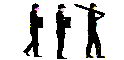
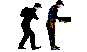
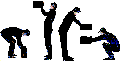
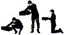
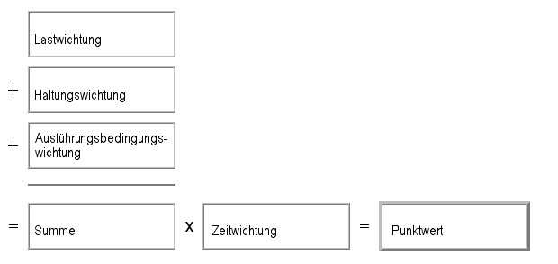

Die Gesamttätigkeit ist ggf. in Teiltätigkeiten zu gliedern. Jede Teiltätigkeit mit erheblichen körperlichen Belastungen ist getrennt zu beurteilen.
Arbeitsplatz/Tätigkeit: __________________________________________________________________
1. Schritt: Bestimmung der Zeitwichtung (Nur eine zutreffende Spalte ist auszuwählen!)
| Hebe- oder Umsetzvorgänge
(< 5 s) |
Halten (> 5 s) |
Tragen (> 5 m) | |||
| Anzahl am Arbeitstag | Zeitwichtung | Gesamtdauer am Arbeitstag | Zeitwichtung | Gesamtweg am Arbeitstag | Zeitwichtung |
| < 10 | 1 | < 5 min | 1 | < 300 m | 1 |
| 10 bis < 40 | 2 | 5 bis 15 min | 2 | 300 m bis < 1 km | 2 |
| 40 bis < 200 | 4 | 15 min bis < 1 Stunde | 4 | 1 km bis < 4 km | 4 |
| 200 bis < 500 | 6 | 1 Stunde bis < 2 Stunden | 6 | 4 bis < 8 km | 6 |
| 500 bis < 1000 | 8 | 2 Stunden bis < 4 Stunden | 8 | 8 bis < 16 km | 8 |
| > 1000 | 10 | > 4 Stunden | 10 | > 16 km | 10 |
Beispiele:
|
Beispiele:
|
Beispiele:
| |||
2. Schritt: Bestimmung der Wichtungen von Last, Haltung und Ausführungsbedingungen
| Wirksame Last1) für Männer | Lastwichtung | Wirksame Last1) für Frauen | Lastwichtung |
| < 10 kg | 1 | < 5 kg | 1 |
| 10 bis < 20 kg | 2 | 5 bis < 10 kg | 2 |
| 20 bis < 30 kg | 4 | 10 bis < 15 kg | 4 |
| 30 bis < 40 kg | 7 | 15 bis < 25 kg | 7 |
| > 40 kg | 25 | > 25 kg | 25 |
1) Mit der "wirksamen Last" ist die Gewichtskraft bzw. Zug-/Druckkraft gemeint, die der Beschäftigte tatsächlich bei der Lastenhandhabung ausgleichen muss. Sie entspricht nicht immer der Lastmasse. Beim Kippen eines Kartons wirken nur etwa 50 %, bei der Verwendung einer Schubkarre oder Sackkarre nur 10 % der Lastmasse.
| Charakteristische Körperhaltungen und Lastposition 2) | Körperhaltung, Position der Last | Haltungsgewichtung |
 |
|
1 |
 |
|
2 |
 |
|
4 |
 |
|
8 |
2) Für die Bestimmung der Haltungswichtung ist die bei der Lastenhandhabung eingenommene charakteristische Körperhaltung einzusetzen; z.B. bei unterschiedlichen Körperhaltungen mit der Last sind mittlere Werte zu bilden - keine gelegentlichen Extremwerte verwenden!
| Ausführungsbedingungen | Ausf.-wichtung |
| Gute ergonomische Bedingungen, z. B. ausreichend Platz, keine Hindernisse im Arbeitsbereich, ebener rutschfester Boden, ausreichend beleuchtet, gute Griffbedingungen | 0 |
| Einschränkung der Bewegungsfreiheit und ungünstige ergonomische Bedingungen (z.B. 1.: Bewegungsraum durch zu geringe Höhe oder durch eine Arbeitsfläche unter 1,5 m² eingeschränkt oder 2.: Standsicherheit durch unebenen, weichen Boden eingeschränkt) | 1 |
| Stark eingeschränkte Bewegungsfreiheit und/oder Instabilität des Lastschwerpunktes (z.B. Patiententransfer) | 2 |
3. Schritt: Bewertung
Die für diese Tätigkeit zutreffenden Wichtungen sind in das Schema einzutragen und auszurechnen.

Anhand des errechneten Punktwertes und der folgenden Tabelle kann eine grobe Bewertung vorgenommen werden.3) Unabhängig davon gelten die Bestimmungen des Mutterschutzgesetzes.
| Risikobereich | Punktwert | Beschreibung |
| 1 | < 10 | Geringe Belastung, Gesundheitsgefährdung durch körperliche Überbeanspruchung ist unwahrscheinlich. |
| 2 | 10 < 25 | Erhöhte Belastung, eine körperliche Überbeanspruchung ist bei vermindert belastbaren Personen4) möglich. Für diesen Personenkreis sind Gestaltungsmaßnahmen sinnvoll. |
| 3 | 25 < 50 | Wesentlich erhöhte Belastung, körperliche Überbeanspruchung ist auch für normal belastbare Personen möglich. Gestaltungsmaßnahmen sind angezeigt.5) |
| 4 | > 50 | Hohe Belastung, körperliche Überbeanspruchung ist wahrscheinlich. Gestaltungsmaßnahmen sind erforderlich.5) |
Anmerkungen
3) Grundsätzlich ist davon auszugehen, dass mit steigenden Punktwerten die Belastung des Muskel-Skelett-Systems zunimmt. Die Grenzen zwischen den Risikobereichen sind aufgrund der individuellen Arbeitstechniken und Leistungsvoraussetzungen fließend. Damit darf die Einstufung nur als Orientierungshilfe verstanden werden.
4) Vermindert belastbare Personen sind in diesem Zusammenhang Beschäftigte, die älter als 40 oder jünger als 21 Jahre alt, "Neulinge" im Beruf oder durch Erkrankungen leistungsgemindert sind.
5) Gestaltungserfordernisse lassen sich anhand der Punktwerte der Tabellen ermitteln. Durch Gewichtsverminderung, Verbesserung der Ausführungsbedingungen oder Verringerung der Belastungszeiten können Belastungen vermieden werden.
Überprüfung des Arbeitsplatzes aus sonstigen Gründen erforderlich
Begründung:
| Datum der Beurteilung: | Beurteilt von: |
Hrsg.: Bundesanstalt für Arbeitschutz und Arbeitsmedizin und Länderausschuss für Arbeitschutz und Sicherheitstechnik 2001